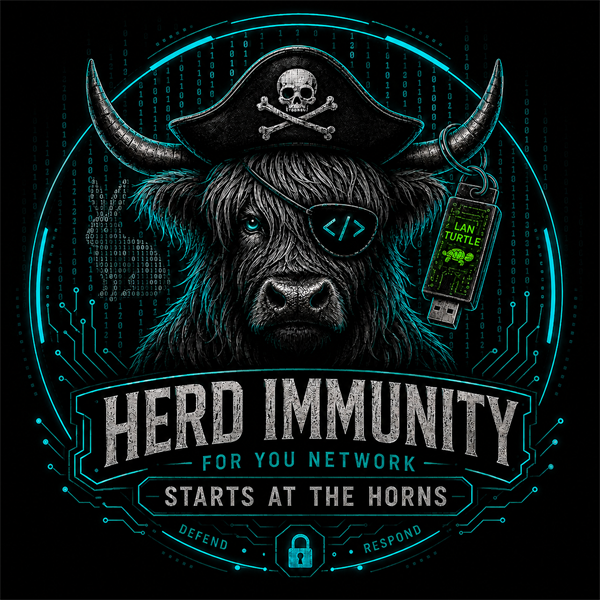
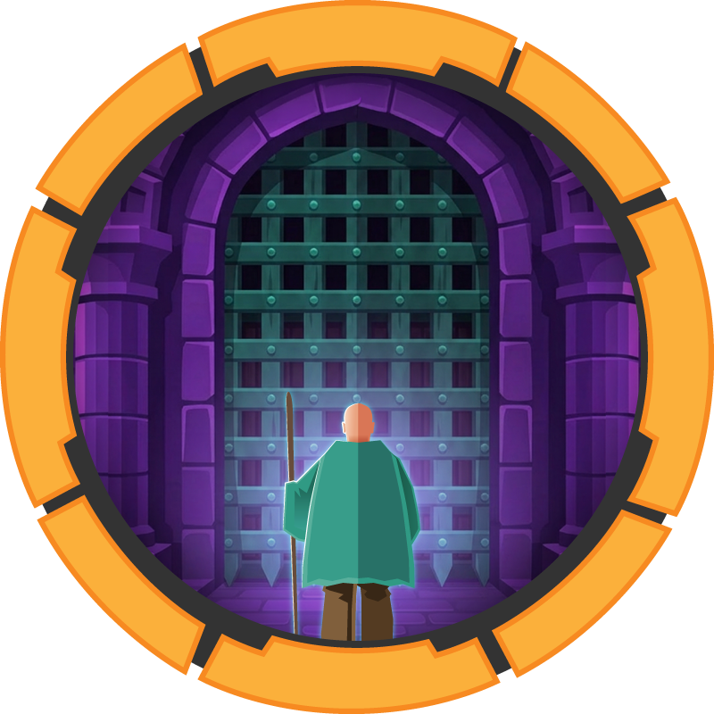
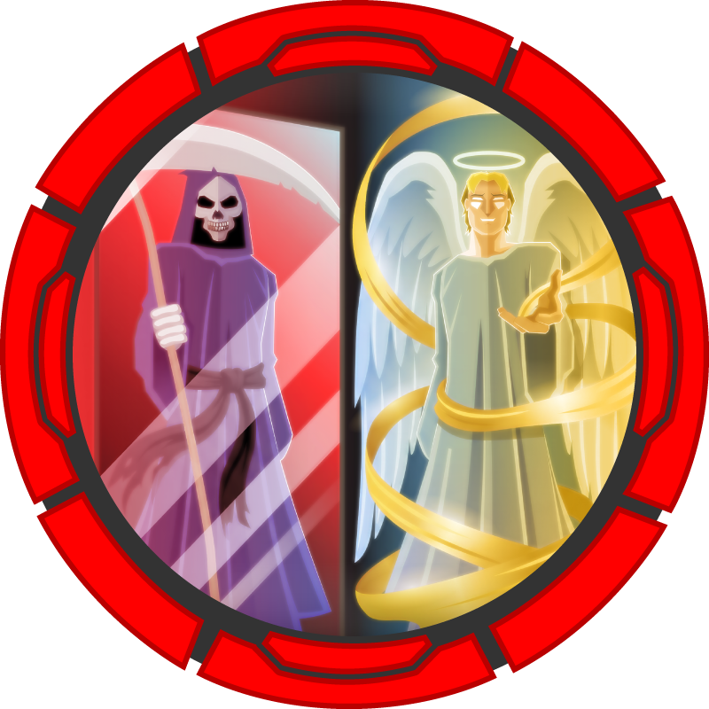

@Lanky
Cyber Security Analyst. Bridging offensive & defensive security.
Australia · Ex-military · Structured · Methodical · Mission focused
Cyber Security Analyst working in Defence environments, focused on threat hunting, compliance, hardening, detection engineering and security control validation. My background covers NIST 800-171 and 800-53, DISA STIGs, continuous monitoring, vulnerability management, GRC and incident response support. I have completed the HTB Certified Penetration Testing Specialist (CPTS) path and am preparing for the exam to validate offensive skills and map adversary tradecraft back to stronger defensive controls.

Top Interests
HTB Skills
Toolstack & Languages
Badges
Verified achievements across Credly, HTB Academy, TryHackMe and HTB Labs.
Public credentials issued and independently verifiable through Credly.


Certifications
Completed credentials and active HTB certification pathways. Progress is sourced from HTB Academy.
HTB CERTIFICATIONS IN PROGRESS
Certified Penetration Testing Specialist
Penetration testing, web and Active Directory attack paths, privilege escalation, pivoting and professional reporting.
Certified Web Exploitation Specialist
Web application penetration testing, API security, bug bounty methodology, exploitation and actionable reporting.
Certified Junior Cybersecurity Associate
Hybrid offensive and defensive foundations: vulnerability assessment, exploitation, SIEM monitoring, traffic and log analysis.
Certified Active Directory Pentesting Expert
Advanced Active Directory attack paths, Kerberos and NTLM abuse, ADCS, trusts, C2 and post-exploitation operations.
COMPLETED & VERIFIED
Certified Defensive Security Analyst
SOC operations, threat hunting, SIEM, DFIR, attack detection, malware analysis and incident reporting.
Falcon 202 — Investigating & Querying Event Data with Falcon EDR
Endpoint detection and response, event querying, threat hunting and incident analysis with Falcon.
Certificate IV — Security & Risk Management
CPP40707 — risk management, security operations and protective security practice.
MORE CERTIFICATIONS & TRAINING
Full list & credentials on LinkedIn ↗.
Hacking Lab
12 Hack The Box machines and 16 TryHackMe rooms completed. Write-ups and video walkthroughs are linked on each lab where available.
▚ Hack The Box — Machines

MakeSense
Access-control gap in a custom app → file write into a root-owned path.

Reactor
Next.js React Server Components RCE → root via an exposed Node.js inspector.

Connected
FreePBX CVE-2025-57819 → root via an incron / sysadmin signed-hook chain.

Paperwork
LPD command injection → PJL traversal → SSH key injection → root via a leaked privileged file descriptor.

Bedside
pdfminer pickle RCE → container pivot → root via a sudo-run PyTorch checkpoint.

Checkpoint
AD chain: tombstone revival → VS Code extension supply-chain → patched-BadSuccessor dMSA → memory-image looting → domain admin via password reuse.

DarkZeroReturns
Handlebars AST type-confusion RCE (CVE-2026-33940) → Linux-to-AD pivot across two domains → Kerberos-principal-to-root → cross-domain pass-the-hash.
Cohort
SSRF blocklist bypass → internal marimo pre-auth WebSocket RCE (CVE-2026-39987) → root via a held, vulnerable PackageKit package (CVE-2026-41651).
DanglingTree
Five-identity AD chain: WAC RCE (CVE-2026-26119) → unauth SmarterMail reset → mailbox domain-swap → SAMR reset → a dangling ADCS template (ESC1) → Domain Admin.

Support
Anon SMB → decompiled binary → LDAP → RBCD → SYSTEM.

CCTV
Default creds → creds in shell history → forged auth signature.

Nexus
Retired · Linux.
◆ TryHackMe — Rooms
Documented · writeup + video

Relevant
SMB webshell → SeImpersonate → SYSTEM.

Jurassic Park
Manual union-based SQL injection.

Kenobi
ProFTPd mod_copy + NFS → SUID path hijack.

Blue
EternalBlue (MS17-010) → SYSTEM.
Also completed


▶ Technique & Tutorial Videos
Non-lab-specific demos from my channel, Lanky's Networking.
Projects
Systems I have designed, built and run, from security tooling to infrastructure.
A self-hosted threat-intelligence dashboard that tracks security events as they break. It aggregates new CVEs, data-breach reports, threat-actor activity and general infosec news alongside social feeds from Mastodon, Bluesky and Reddit into a single continuously updating board.
I built it to stay current with emerging threats and to feed that context into my defensive work: threat hunting, vulnerability management and detection engineering.
▸ Open Cyber Deck ↗ ▸ Full detailsA Splunk Enterprise deployment that ingests Tenable vulnerability and hardening scan data and turns it into an operational security picture. The dashboard gives an OS-filtered drill-down, per-host compliance trends and high-risk finding tracking across a rolling twelve months.
It follows the same workflow as a production vulnerability-management programme: export findings from Tenable, index them in Splunk, then report on remediation progress and hardening posture.
▸ Full detailsGiving my child's device the same filtered internet at home and away. On the home network, a Pi-hole with a family-safe upstream resolver blocks ads, trackers, malware and adult content for every device. Off the network, an always-on WireGuard tunnel routes the device back home so it keeps the same protection on mobile data.
Step 1 is complete: a self-healing route home, combining a WireGuard server with an automated dynamic-DNS updater so the tunnel survives the ISP changing our public IP.
▸ Full detailsA multi-agent system that monitors and self-heals my home lab around the clock. Eight specialist agents cover security, DNS, networking, containers, backups, updates, media and storage, each on its own schedule under a supervising manager agent, with a WhatsApp service desk for alerts and requests.
They run health checks, catch configuration drift, remediate common failures automatically and log every change. The structure mirrors a real L1 to L3 IT support model.
▸ Full detailsA self-hosted server running over 35 Docker containers across a dozen compose stacks on Ubuntu. It sits behind Nginx Proxy Manager for TLS, uses Cloudflare Tunnels so no inbound ports are open, provides WireGuard for remote access, and runs Pi-hole for network-wide DNS filtering.
This is where I get hands-on with Linux administration, containerisation, networking and defensive hardening: reverse proxies, segmentation, secrets handling, NAS backups and monitoring.
▸ Full detailsA self-hosted AI stack running Ollama on a GPU with Open WebUI as the front end. No data leaves the network, which makes it a private environment for running models, testing prompts and providing inference to the automation behind my agent team.
▸ Full detailsA locally controlled smart-home platform built on Home Assistant, bridging Matter, Zigbee and MQTT devices through a Mosquitto broker. Automations, dashboards and app control all stay on the network rather than depending on vendor clouds.
▸ Full detailsA self-hosted media streaming platform built on Jellyfin. My own library is transcoded on the GPU and streamed to any device on the network, with Jellyseerr providing a request front end for the household. It replaces a commercial streaming subscription and runs entirely on my own hardware.
▸ Full detailsA self-hosted WordPress site on a containerised stack: WordPress on PHP 8.3 behind an Nginx front end with a MariaDB backend. It is deployed with Docker Compose and published through the same reverse proxy and tunnel setup as the rest of the lab.
▸ Visit australianhomestead.com ↗ ▸ Full detailsThe site you are reading: a hand-built static portfolio with no dependencies or build step, hosted on GitHub Pages. It documents my Hack The Box and TryHackMe machines, HTB Academy progress, certifications and video walkthroughs.
⌥ GitHubAutomation & Scripts
43 scripts that run my home lab, covering security scanning, self-healing, an autonomous agent framework and general operations. Click a linked script name to read its sanitised source. These are the real running scripts, with secrets such as tokens, IDs and phone numbers replaced by placeholders.
When to use the scripts
The live server catalogue is authoritative. Agents use the approved runner and ticket workflow; a filename is never permission to execute it.
run-tonight-updates.sh to sequence OS and container updates, then perform a fresh health check and review failures or reboot requirements.Security & hardening 9
Blue-team automation: scanning, auditing and fail-safe controls.
[PASS]/[FAIL] per control.@Recycle area with a JSON audit trail instead of ever hard-deleting.AI agent framework 6
The orchestration layer behind the agent ops team.
Monitoring & self-healing 8
Detect → remediate → report, delivered to my phone.
Storage & NAS 7
Keeping a 21 TB NAS healthy and tidy.
safe-recycle, never a hard delete).Media library 3
Quality checks for the Jellyfin library.
Backups & updates 4
Reproducibility and staying patched.
.env files to the NAS with retention: the "rebuild from scratch" safety net.Notifications & bots 3
How the lab talks back to me.
Infrastructure utilities 3
Small fixers that keep the plumbing working.
Presentations
Talks, demos and slide decks — explaining security work to both technical and non-technical audiences.